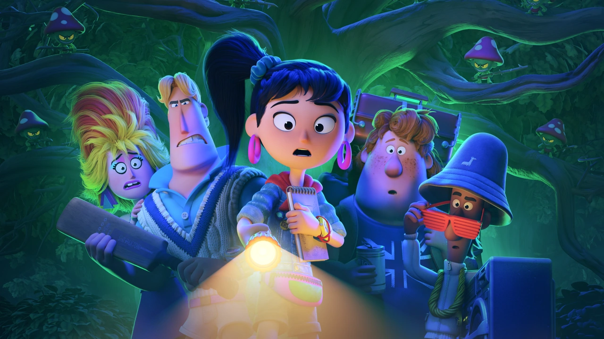

▶2022 / BLENDER STUDIOCharge充能 · 科幻 · 工业场景在冷蓝色的工业空间里，一次充电行动把人物与机械推到了一起。留意人物面部的暖光，以及金属反射如何引导视线。在 B 站观看 ↗查看制作静帧 →
▶2019 / BLENDER STUDIOSpring春 · 奇幻 · 环境动画一名牧羊女孩和小狗走进群山。雾气、云层与林间透光不断改变景深，巨大的生物也随之从环境中显现。在 B 站观看 ↗查看制作静帧 →
▶2021 / BLENDER STUDIOSprite Fright精灵惊魂记 · 喜剧 · 角色动画一群年轻人走进森林，遇上看似友善的小精灵。圆润的角色造型、停顿和突如其来的动作，共同控制着喜剧的节奏。在 B 站观看 ↗查看制作静帧 →